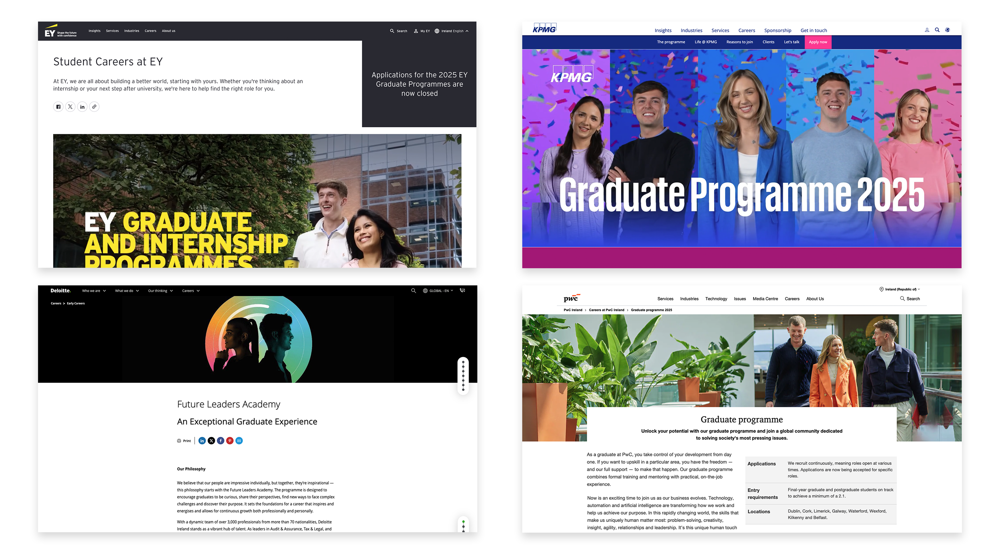
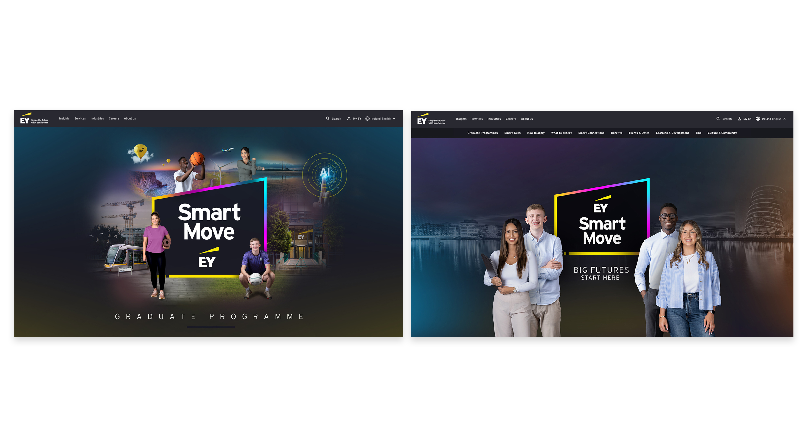
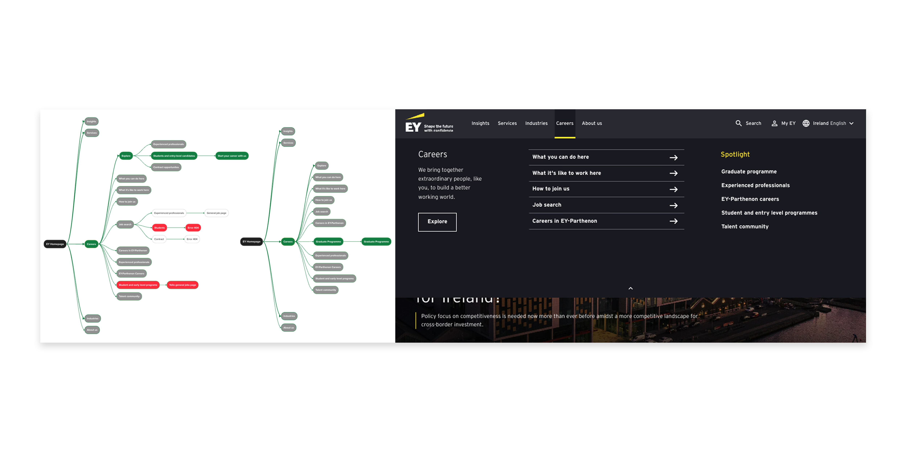
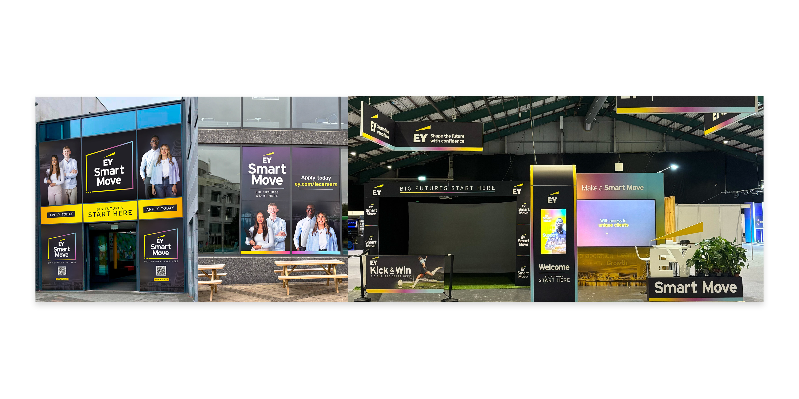

As part of EY’s Employer Branding team, I spent five months as Creative Lead for the national Graduate Programme campaign, Smart Move: Big Futures Start Here. The objective was to refresh the brand look and feel, enhance the graduate recruitment experience, and deliver a cohesive campaign across web, social, digital, and physical touchpoints. My role spanned brand development, UX/UI design, creative direction, stakeholder management, and production oversight across multiple vendors and internal teams.
Problem
While EY already had strong brand awareness, the existing graduate recruitment experience lacked emotional resonance and didn’t fully reflect the ambitions and motivations of today’s graduates. The previous campaign website was content-heavy, visually static, and not optimised for how graduates search, compare, and decide on early-career opportunities. Our research showed that:
Graduates wanted clear pathways and practical guidance, not corporate generalities.
Visual storytelling was essential for conveying culture, values, and growth opportunities.
The application journey needed to feel straightforward, relevant, and confidence-building.
The challenge was to re-energise the brand, create a campaign that felt relatable and aspirational, and deliver a recruitment website and content ecosystem that engaged and informed graduates effectively.
Process: Research & Insight
Conducted competitor benchmarking across Big Four, global consultancies, and tech employers.
Facilitated user research sessions with graduates to understand goals, frustrations, expectations, and language.
Identified the need for:
More concise messaging.
Story-driven content.
Clearer programme navigation and role breakdowns.
High-energy visuals that reflected real EY experiences.

Brand Development
Developed a refreshed visual identity system aligned to EY brand foundations, while tailoring tone of voice and visual style for a graduate audience.
Created messaging themes centred on career growth, culture, and diverse opportunities.

UX / UI Design
Redesigned the graduate recruitment website using:
Page-level content hierarchy restructuring
Chunked, scannable text for easier content consumption
Modular components to support future scalability and campaign evolution
Worked collaboratively with developers to ensure alignment with accessibility and usability best practice.

Content & Production
Coordinated deliverables across employer branding, talent acquisition, digital, and external creative partners.
Produced campaign assets for:
Website
Social campaigns (Instagram, LinkedIn, TikTok)
Outdoor and print advertising
Graduate events and campus activations

Implementation
The redesigned website launched as the central platform for the campaign, supported by unified messaging, video storytelling, and a modern visual identity. The campaign was deployed across multiple touchpoints, ensuring a consistent and engaging experience from first contact to application.
The visual style emphasised positivity, forward-momentum, and connection, helping graduates see themselves at EY and understand how the organisation supports their growth.
Conclusion
By leading the creative strategy and delivery of the Smart Move campaign, I helped to reposition EY as an employer that values individuality, ambition, and long-term development. The refreshed graduate experience is clearer, more inspiring, and more aligned to the expectations of the next generation of talent.
This project demonstrates my ability to:
Lead multi-channel creative campaigns
Translate user insight into brand and experience design
Manage complex stakeholder and vendor relationships
Deliver high-quality branded content at scale
Shape digital experiences that drive engagement and action